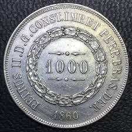

O que é Numismática?
A numismática é o estudo e a coleção de moedas, cédulas, medalhas e outros itens monetários ou relacionados. Mais do que um hobby ou prática de colecionismo, a numismática é também uma disciplina que investiga aspectos históricos, culturais, econômicos e artísticos associados a esses objetos.
